The closest to A24 itself. Near-black ground, off-white type, and every film treated as a catalog entry with a number, title, client and format.
The centerpiece is a title index: hover, tab or scroll through the project names and the big still behind them changes. No cards, no icons. The spacing and the image choices carry it.
- Type
- Instrument Sans, IBM Plex Mono
- Color
- Borrows
- A24 films index, Annapurna title list, Somesuch credit lines
- Watch for
- Quietest of the five. Relies on strong stills, and a few are only 1200px wide.
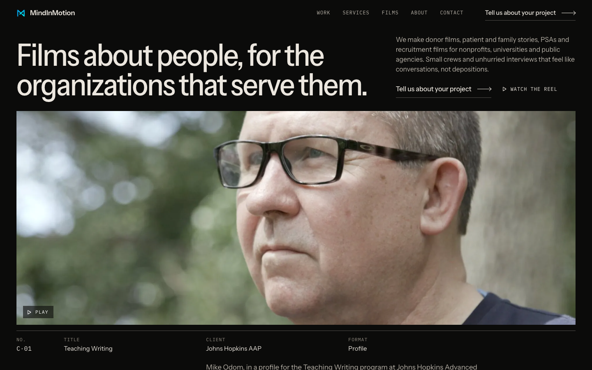
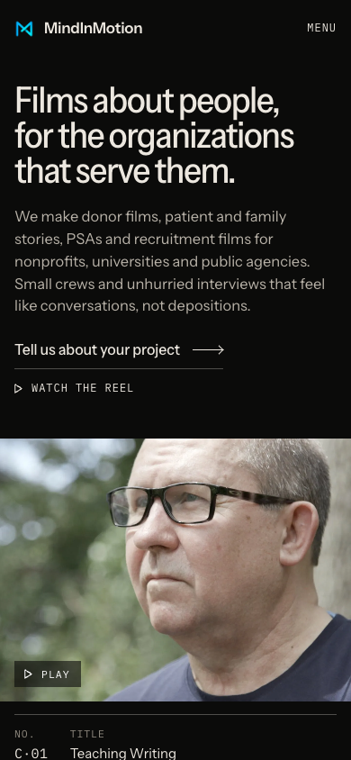
Built like the commercial production companies (Smuggler, Park Pictures, Somesuch). One full-bleed frame fills the first screen, with the Baltimore and Orlando numbers pinned to its bottom corners.
Below it, each project is a heavy credit line ("Infinite Legacy, Joe") over a large still that pulls into focus as you scroll. It looks the most expensive of the five.
- Type
- Archivo Extended, IBM Plex Mono
- Color
- Borrows
- Somesuch credit-line headlines, Smuggler city corners, Park Pictures focus-pull reveal
- Watch for
- Wants a silent reel loop behind the hero. The current loop has horror shots in it (see questions).
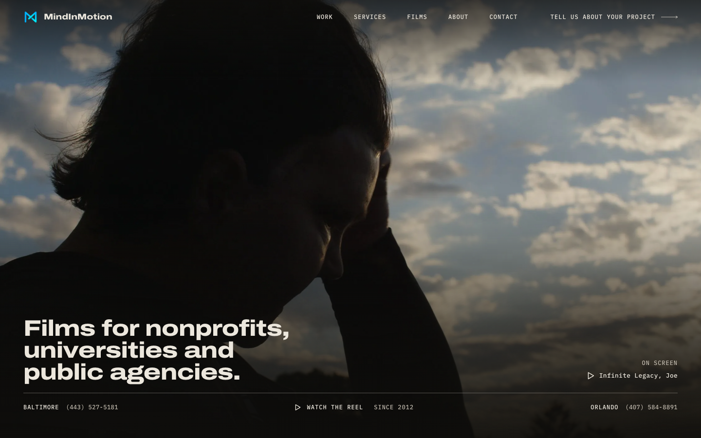
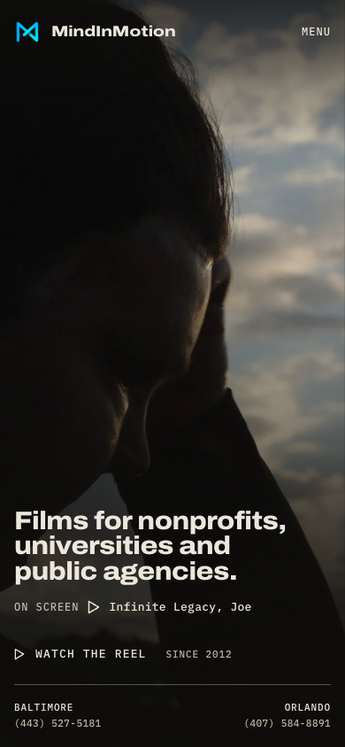
A cinema's printed program, read at night. Warm charcoal, bone-colored type and one amber accent, set in a classical serif with real small caps and old-style numerals.
The work appears as numbered entries with credit blocks and journal-style captions, and Josh and Victor's story gets room. It's the warmest and most literate of the five.
- Type
- Cormorant Garamond, Cormorant SC, Newsreader
- Color
- Borrows
- Criterion and Mubi journal layouts, Searchlight italic links
- Watch for
- Amber on brown can drift toward "wine bar" if pushed further. Drops the cyan.
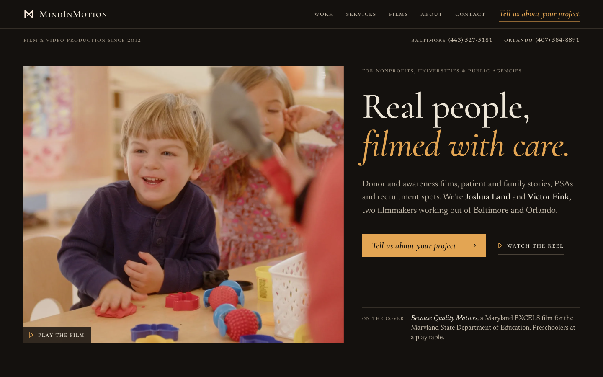
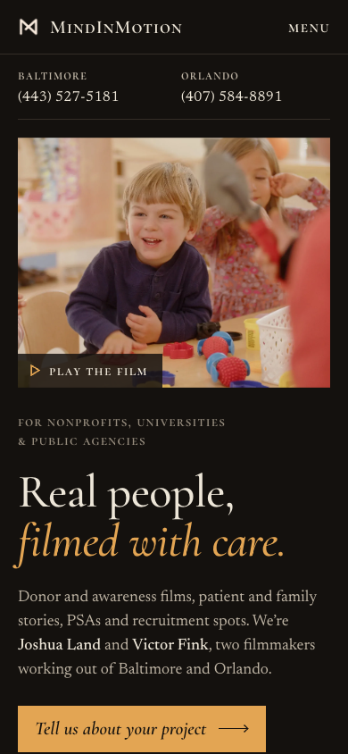
The homepage plays like a film's opening titles. Five client stories are pinned full-width scenes between letterbox bars, and the credits sit on the bars.
Scene numbers and timecode label every section. The boldest, most cinematic concept, and the one that best shows you think in shots.
- Type
- Archivo Condensed, Newsreader, IBM Plex Mono
- Color
- Borrows
- A24 hero title swap, IFC timecode, film slates
- Watch for
- The longest page, and the scroll scenes take the most care to build and test on iPhone.
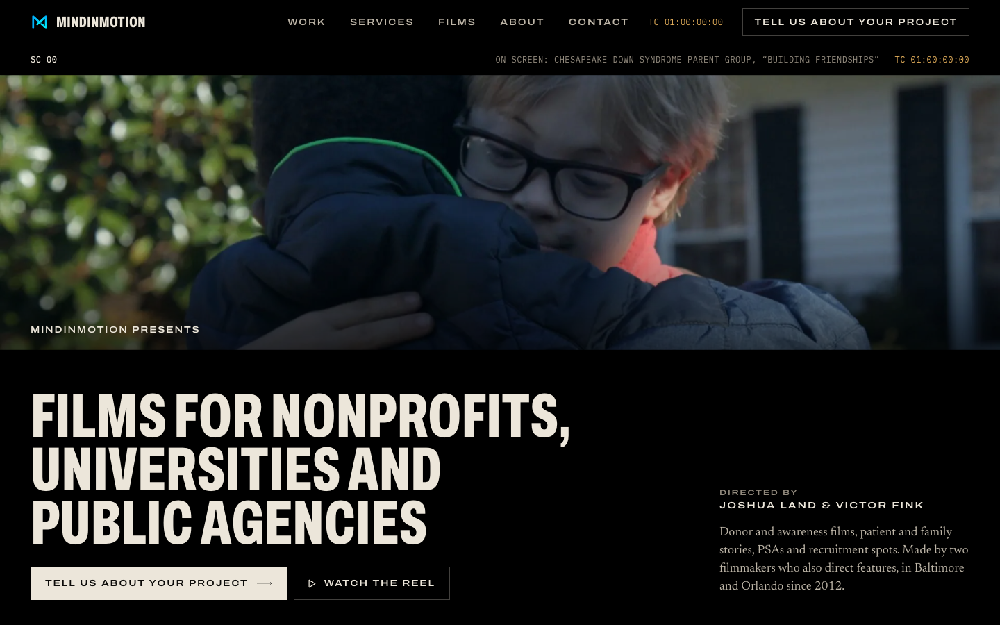
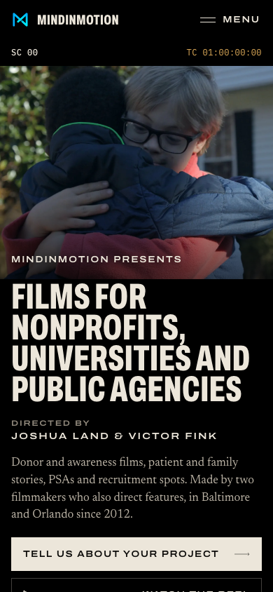
The people in your films carry the page: large, carefully cropped faces from the Infinite Legacy, Hopkins and Maryland EXCELS work, each with a credit and one plain line.
The pitch to a nonprofit buyer is that you're good with real people. It describes your process as "conversations, not depositions". Slow, warm and the most direct.
- Type
- Newsreader, Figtree
- Color
- Borrows
- Janus black-and-white origin photo, Caviar plain-paragraph About, Neon pull quotes
- Watch for
- The designer kept the line under each face factual until you confirm what each film was for.
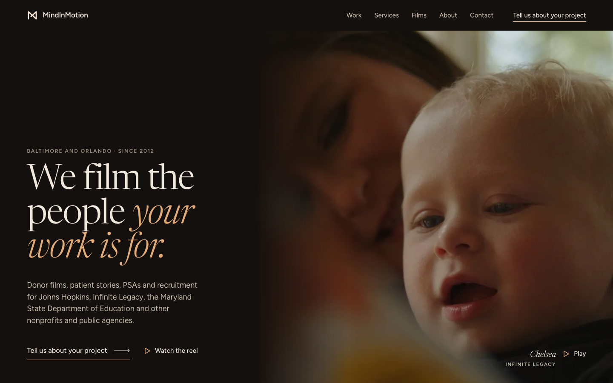
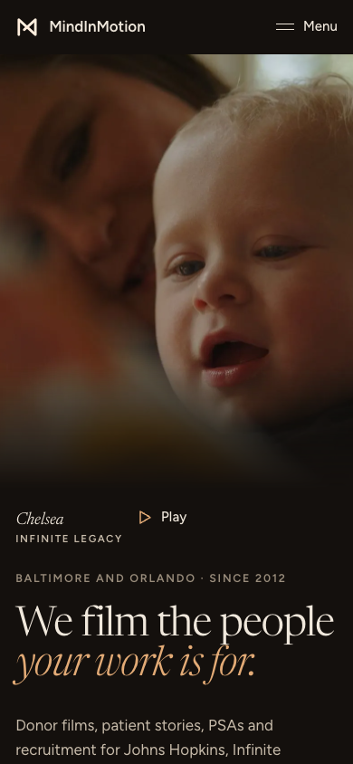
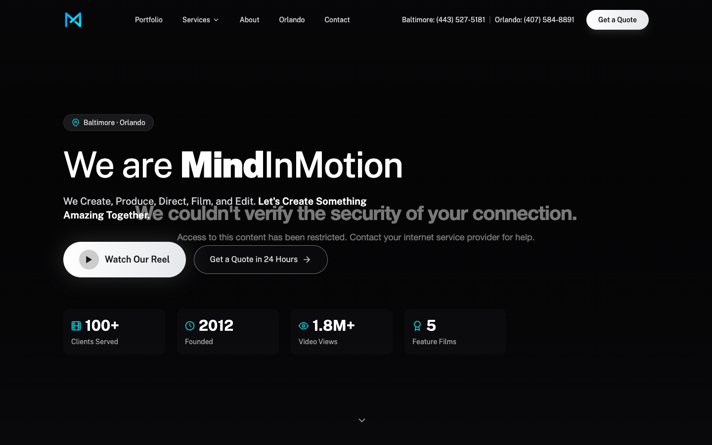
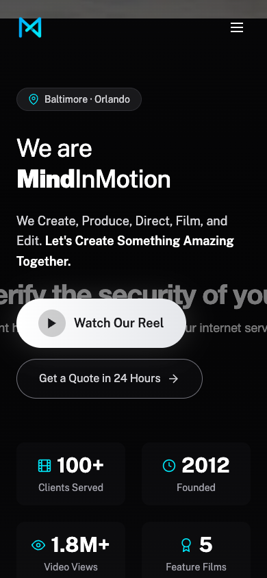
Open questions before any of these goes live
- The background reel loop. The silent loop behind the current homepage (Vimeo 848454220) comes from the reel, and the reel includes Don't Go Hiking, Bad Witch and Bennett's Curse shots. Every concept uses a still for now. A 30 to 60 second loop cut from client work only would fix it.
- The screening Q&A photo. It shows three men. Which two are Josh and Victor, left to right? Then the captions can name them.
- Format labels. The concepts only use labels the current site already uses ("Organ donation testimonials", "Maryland EXCELS TV PSA"). Real titles are missing for Pearlstone and Tidewater Direct, and Hopkins "Engineering Management" needs a yes as a recruitment film.
- Cuba course. The homepage and brief say Johns Hopkins AAP (Advanced Academic Programs). The live portfolio page says Johns Hopkins SAIS. Which is right?
- Joe (Infinite Legacy). Is he from a donor family or a recipient? Concept E wants to say what each film was for, and that's on hold until you confirm.
- Low-resolution stills. Cuba (child on horse), Moms at the Playground and Pearlstone exist only at 1200px, and the black-and-white crew-on-the-hill photo is 576px. 2560px frame exports from the masters would let them run large.
- Carried over from the audit. Every concept leaves out the feature count, the 1.8M views and 100+ clients figures, and "award-winning" until you confirm them.
- Because Quality Matters is unlisted. The laughing-preschoolers still comes from this Maryland EXCELS spot, which is unlisted on Vimeo. Four concepts feature it, and C uses it as the hero. Is MSDE fine with it being public on your homepage? If not, it swaps out easily. "Checklist Moments" was dropped where it only had a 640px still; it can come back as a text row.
- New format labels. A calls the Mike Odom film a "Profile" for Teaching Writing at Hopkins AAP. That label is new, so it needs your yes along with the others.
- Video playback here. Some Vimeo videos may refuse to play from this local preview if their embed settings only allow mindinmotion.tv. They'll play on the real domain.